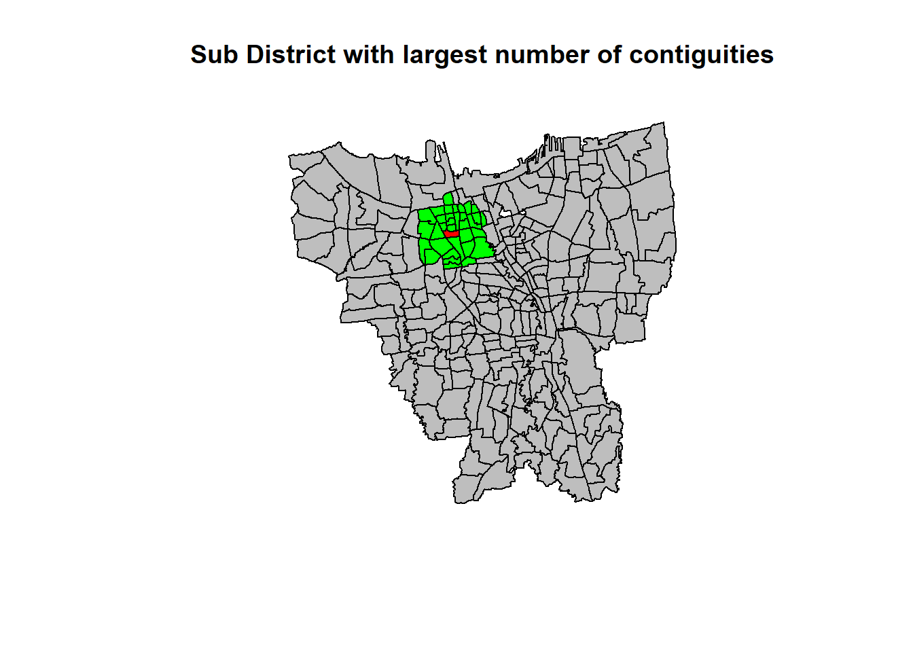

pacman::p_load(dplyr, sf, spdep, tmap, tidyverse, readxl, ggplot2,moments,plotly, sfdep)Take Home Ex 2
Questions
“The question is where are the sub-districts with relatively higher number of vaccination rate and how they changed over time.”
Load R packages
Getting started
At first, I have loaded the beginning month of the data as shown below:

However, July 2021 has only 21 variables. I decided to to further research. Based on research, there was a change in the category of vaccination recipient in DKI Jakarta starting from 4 July 2021 which they have mentioned on the website itself here. Hence, I have decided to change the data to end of the month for easier analysis.
Import data and preparation
jul<- read_excel("data/aspatial/Juli 2021.xlsx")
aug21<- read_excel("data/aspatial/Agustus 2021.xlsx")
sep21<- read_excel("data/aspatial/September 2021.xlsx")
oct21<- read_excel("data/aspatial/Oktober 2021.xlsx")
nov21<- read_excel("data/aspatial/November 2021.xlsx")
dec21<- read_excel("data/aspatial/Desember 2021.xlsx")
jan22<- read_excel("data/aspatial/Januari 2022.xlsx")
feb22<- read_excel("data/aspatial/Februari 2022.xlsx")
mar22<- read_excel("data/aspatial/Maret 2022.xlsx")
apr22<- read_excel("data/aspatial/April 2022.xlsx")
may22<- read_excel("data/aspatial/Mei 2022.xlsx")
jun22<- read_excel("data/aspatial/Juni 2022.xlsx")
After analyzing the dataset, there are different number of variables.
- Jul 2021 to Feb 2022: 27 variables
- March 2022 to June 2022: 34 variables
The additional columns include categories such as TAHAPAN and REMAJA which means General Public and Children Age 12-17 respectively and also introduces the 3rd dose for all the categories.
In the section below, I decided to take total dose 1 to dose 3 value for all categories and compare them for exploratory purposes.
Columns to keep:
KODE KELURAHAN = SUB DISTRICT CODE
WILATAH KOTA = NSEW REGION
KECAMATAN = DISTRICT
KELURAHAN = SUB DISTRICT
SASARAN = TARGETED VACCINE
BELUM VAKSIN = NOT YET VACCINATED
JUMLAH DOSIS 1 = TOTAL AMOUNT OF DOSE 1 GIVEN
JUMLAH DOSIS 2 = TOTAL AMOUNT OF DOSE 2 GIVEN
JUMLAH DOSIS 3 = TOTAL AMOUNT OF DOSE 3 GIVEN
TOTAL VAKSIN DIBERIKAN = TOTAL VACCINE GIVEN
Change column name:
colnames(jul)[6] ="NotYetV_jul21"
colnames(jul)[7] ="D1_jul21"
colnames(jul)[8] ="D2_jul21"
colnames(jul)[9] ="TotalV_jul21"
jul21<-jul[-c(1:3,5,10:27)]
colnames(aug21)[6] ="NotYetV_aug21"
colnames(aug21)[7] ="D1_aug21"
colnames(aug21)[8] ="D2_aug21"
colnames(aug21)[9] ="TotalV_aug21"
aug21<-aug21[-c(1:3,5,10:27)]
colnames(sep21)[6] ="NotYetV_sep21"
colnames(sep21)[7] ="D1_sep21"
colnames(sep21)[8] ="D2_sep21"
colnames(sep21)[9] ="TotalV_sep21"
sep21<- sep21[-c(1:3,5,10:27)]
colnames(oct21)[6] ="NotYetV_oct21"
colnames(oct21)[7] ="D1_oct21"
colnames(oct21)[8] ="D2_oct21"
colnames(oct21)[9] ="TotalV_oct21"
oct21<-oct21[-c(1:3,5,10:27)]
colnames(nov21)[6] ="NotYetV_nov21"
colnames(nov21)[7] ="D1_nov21"
colnames(nov21)[8] ="D2_nov21"
colnames(nov21)[9] ="TotalV_nov21"
nov21<-nov21[-c(1:3,5,10:27)]
colnames(dec21)[6] ="NotYetV_dec21"
colnames(dec21)[7] ="D1_dec21"
colnames(dec21)[8] ="D2_dec21"
colnames(dec21)[9] ="TotalV_dec21"
dec21<-dec21[-c(1:3,5,10:27)]
colnames(jan22)[6] ="NotYetV_jan21"
colnames(jan22)[7] ="D1_jan22"
colnames(jan22)[8] ="D2_jan22"
colnames(jan22)[9] ="TotalV_jan22"
jan22<-jan22[-c(1:3,5,10:27)]
colnames(feb22)[6] ="NotYetV_jan21"
colnames(feb22)[7] ="D1_feb22"
colnames(feb22)[8] ="D2_feb22"
colnames(feb22)[9] ="TotalV_feb22"
feb22<-feb22[-c(1:3,5,10:27)]
colnames(mar22)[6] ="NotYetV_mar21"
colnames(mar22)[7] ="D1_mar22"
colnames(mar22)[8] ="D2_mar22"
colnames(mar22)[9] ="D3_mar22"
colnames(mar22)[10] ="TotalV_mar22"
mar22<-mar22[-c(1:3,5,11:34)]
colnames(apr22)[6] ="NotYetV_apr21"
colnames(apr22)[7] ="D1_apr22"
colnames(apr22)[8] ="D2_apr22"
colnames(apr22)[9] ="D3_apr22"
colnames(apr22)[10] ="TotalV_apr22"
apr22<-apr22[-c(1:3,5,11:34)]
colnames(may22)[6] ="NotYetV_may21"
colnames(may22)[7] ="D1_may22"
colnames(may22)[8] ="D2_may22"
colnames(may22)[9] ="D3_may22"
colnames(may22)[10] ="TotalV_may22"
may22<-may22[-c(1:3,5,11:34)]
colnames(jun22)[6] ="NotYetV_jun21"
colnames(jun22)[7] ="D1_jun22"
colnames(jun22)[8] ="D2_jun22"
colnames(jun22)[9] ="D3_jun22"
colnames(jun22)[10] ="TotalV_jun22"
jun22<-jun22[-c(1:3,5,11:34)]For column 1 to 5, It shows a constant rows names across all the months. Furthermore, I will keep column 6 to 9 for every month as it has done a rowsum across dose 1 and dose 2 for all the categories for us. Take note from march onwards there is dose 3, thus we need to change range from 9 to 10.
# we will repeat this code for all the months but remember we have to change the month name
FY21_22Vaccine <-jul[c(1:9)]
FY21_22Vaccine<- left_join(FY21_22Vaccine, aug21, by="KELURAHAN")
FY21_22Vaccine<- left_join(FY21_22Vaccine, sep21, by="KELURAHAN")
FY21_22Vaccine<- left_join(FY21_22Vaccine, oct21, by="KELURAHAN")
FY21_22Vaccine<- left_join(FY21_22Vaccine, nov21, by="KELURAHAN")
FY21_22Vaccine<- left_join(FY21_22Vaccine, dec21, by="KELURAHAN")
FY21_22Vaccine<- left_join(FY21_22Vaccine, jan22, by="KELURAHAN")
FY21_22Vaccine<- left_join(FY21_22Vaccine, feb22, by="KELURAHAN")
FY21_22Vaccine<- left_join(FY21_22Vaccine, mar22, by="KELURAHAN")
FY21_22Vaccine<- left_join(FY21_22Vaccine, apr22, by="KELURAHAN")
FY21_22Vaccine<- left_join(FY21_22Vaccine, may22, by="KELURAHAN")
FY21_22Vaccine<- left_join(FY21_22Vaccine, jun22, by="KELURAHAN")We will be using FY21_22Vaccine data frame from now on.
After tidying data for aspatial, lets import geospatial data. The projected coordinate system is:

jakarta <- st_read(dsn = "data/geospatial",
layer = "BATAS_DESA_DESEMBER_2019_DUKCAPIL_DKI_JAKARTA") %>%
st_transform(crs = 23845)Reading layer `BATAS_DESA_DESEMBER_2019_DUKCAPIL_DKI_JAKARTA' from data source
`C:\yifei-alpaca\IS415-GAA\Take-home_Ex\Take-home_Ex02\data\geospatial'
using driver `ESRI Shapefile'
Simple feature collection with 269 features and 161 fields
Geometry type: MULTIPOLYGON
Dimension: XY
Bounding box: xmin: 106.3831 ymin: -6.370815 xmax: 106.9728 ymax: -5.184322
Geodetic CRS: WGS 84jakarta <- jakarta[c(1:9)]Columns to keep:
KODE DESA = SUB DISTRICT CODE
DESA = SUB DISTRICT
KODE = CODE
PROVINISI = PROVINCE
KAB KOTA= NSEW REGION
KECAMATAN = DISTRICT
DESA_KELUR = SUB DISTRICT (can be removed same value as DESA)
JUMLAH_PEN = TOTAL POPULATION
The jakarta data frame contains population number on a district level. We will do a basic EDA to understand the data more.
Exploratory Data Analysis (EDA)
Let’s plot the population map! And look there are regions that is outside of Jakarta, below we will be excluding them.
qtm(jakarta)As mentioned in the requirement, we should exclude all the outer islands from the DKI Jakarta sf data frame. we can check based on regions, if its not in Jakarta, we should remove them.
unique(jakarta$KAB_KOTA)[1] "JAKARTA BARAT" "JAKARTA PUSAT" "KEPULAUAN SERIBU" "JAKARTA UTARA"
[5] "JAKARTA TIMUR" "JAKARTA SELATAN" NA In the above result, KEPULAUAN SERIBU is the Thousand Islands and is a chain of islands to the north of Jakarta’s coast which is out of our analysis interest.
jakarta<- filter(jakarta, KAB_KOTA != "KEPULAUAN SERIBU")Plot the latest data frame
qtm(jakarta)
Joining the attribute data and geospatial data
Before we can perform georelational join, one extra step is required to check which column can be join together. After looking at both dataset, we can join by KODE KELURAHAN in FY21_22Vaccine to CODE_DESA in jakarta dataset.
jakarta_vaccine <- left_join(jakarta, FY21_22Vaccine,
by = c("KODE_DESA" = "KODE KELURAHAN"))Convert to sf objects
jakarta_vaccine <- st_as_sf(jakarta_vaccine)Choropleth Mapping Geospatial Data using tmap
tmap_mode("plot")
qtm(jakarta_vaccine,
fill = "KAB_KOTA")
BARAT = WEST
PUSAT = CENTER
SELATANT = SOUTH
TIMUR = EAST
UTARA = NORTH
Population choropleth map
tmap_mode("plot")
qtm(jakarta_vaccine,
fill = "JUMLAH_PEN")
As we can see from the graph above, the west side of Jakarta is more dense as compared to the rest of the region. This shows that there are more population in the west area followed by east area.
Visualizing Dose 1 to 3
Lets visualize our combined data in terms of total dose 1,2 and 3. A basic goal of a classification scheme is to group together similar observations and split apart observations that are substantially different.
Based on the skewness below, we can see that all more positively skewed towards the right which means it is not appropriate to use equal and quartile methods.
skewness(jakarta_vaccine$D1_jul21)[1] 0.9797892skewness(jakarta_vaccine$D1_aug21)[1] 1.085893skewness(jakarta_vaccine$D1_sep21)[1] 1.072417skewness(jakarta_vaccine$D1_oct21)[1] 1.060235skewness(jakarta_vaccine$D1_nov21)[1] 1.070041skewness(jakarta_vaccine$D1_dec21)[1] 1.08138skewness(jakarta_vaccine$D1_jan22)[1] 1.081787skewness(jakarta_vaccine$D1_feb22)[1] 1.083661skewness(jakarta_vaccine$D1_mar22)[1] 1.08686skewness(jakarta_vaccine$D1_apr22)[1] 1.087654skewness(jakarta_vaccine$D1_may22)[1] 1.087841skewness(jakarta_vaccine$D1_jun22)[1] 1.088754skewness(jakarta_vaccine$D2_jul21)[1] 0.8387278skewness(jakarta_vaccine$D2_aug21)[1] 0.9088209skewness(jakarta_vaccine$D2_sep21)[1] 1.015658skewness(jakarta_vaccine$D2_oct21)[1] 1.021767skewness(jakarta_vaccine$D2_nov21)[1] 1.023198skewness(jakarta_vaccine$D2_dec21)[1] 1.018473skewness(jakarta_vaccine$D2_jan22)[1] 1.018324skewness(jakarta_vaccine$D2_feb22)[1] 1.021613skewness(jakarta_vaccine$D2_mar22)[1] 1.019545skewness(jakarta_vaccine$D2_apr22)[1] 1.023047skewness(jakarta_vaccine$D2_may22)[1] 1.023062skewness(jakarta_vaccine$D2_jun22)[1] 1.024074In the following code chunck, I will be using Natural Breaks (Jenks) method and will be classifying into 6 classes for my analysis. Natural Breaks are good for mapping values that are not evenly distributed on a histogram which is is suitable in our case.
The below code is a function to help us iterate multiple times, limiting the amount of large code.
jenks_plot <- function(df, varname) {
tm_shape(jakarta_vaccine) +
tm_polygons() +
tm_shape(df) +
tm_fill(varname,
n= 6,
style = "jenks",
title = "No of people vaccinated") +
tm_layout(main.title = varname,
main.title.position = "center",
main.title.size = 1.2,
legend.height = 0.45,
legend.width = 0.35,
frame = TRUE) +
tm_borders(alpha = 0.2)
}Lets visualize the data in months:
tmap_mode("plot")
tmap_arrange(jenks_plot(jakarta_vaccine, "D1_jul21"),
jenks_plot(jakarta_vaccine, "D2_jul21"),
jenks_plot(jakarta_vaccine, "D1_aug21"),
jenks_plot(jakarta_vaccine, "D2_aug21"))
tmap_arrange(jenks_plot(jakarta_vaccine, "D1_sep21"),
jenks_plot(jakarta_vaccine, "D2_sep21"),
jenks_plot(jakarta_vaccine, "D1_oct21"),
jenks_plot(jakarta_vaccine, "D2_oct21"))
tmap_arrange(jenks_plot(jakarta_vaccine, "D1_nov21"),
jenks_plot(jakarta_vaccine, "D2_nov21"),
jenks_plot(jakarta_vaccine, "D1_dec21"),
jenks_plot(jakarta_vaccine, "D2_dec21"))
tmap_arrange(jenks_plot(jakarta_vaccine, "D1_jan22"),
jenks_plot(jakarta_vaccine, "D2_jan22"),
jenks_plot(jakarta_vaccine, "D1_feb22"),
jenks_plot(jakarta_vaccine, "D2_feb22"))
tmap_arrange(jenks_plot(jakarta_vaccine, "D1_mar22"),
jenks_plot(jakarta_vaccine, "D2_mar22"),
jenks_plot(jakarta_vaccine, "D1_apr22"),
jenks_plot(jakarta_vaccine, "D2_apr22"))tmap_arrange(jenks_plot(jakarta_vaccine, "D1_may22"),
jenks_plot(jakarta_vaccine, "D2_may22"),
jenks_plot(jakarta_vaccine, "D1_jun22"),
jenks_plot(jakarta_vaccine, "D2_jun22"))As compare the charts above, it is a little hard to visualized. We will be using a gif maker tool to compile the images and see the difference. (this idea credits to our senior megan) ezgif
The GIF below is for Dose 1 by months. Based on the image, we can see that July 2021 is particularly more dense as compared to other months.

The GIF below shows Dose 2 by months. Based on the image, we can see that July and August 2021 is particularly more dense as compared to other months.
.gif)
The GIF below shows Dose 3 by months. Based on the image, we can see that April to Jun 2022 are particularly more dense compared to other months.

The COVID-19 vaccination program in Jakarta, Indonesia started on January 13, 2021. The first doses of the vaccine were given to healthcare workers in several hospitals across Jakarta. The vaccination program was rolled out in phases, with priority given to healthcare workers, public service officers, and the elderly population. On 1 April 2021, the Ministry of Health announced the postponement of the vaccination schedule for the general public to June or July because of a vaccine shortage. On 14 July, the daily number of people vaccinated crossed two million mark for the first time. This could probably show that why July 2021 is more dense for Dose 1 and 2. We can see that Jakarta Barat which is the west area has a higher vaccination rate.
We can also see the difference in Dose 1 and Dose 2 rate, the threshold are much higher for dose 1 as compared to dose 2. One factor is vaccine hesitancy or a lack of access to the second dose. Some individuals may be hesitant to get the second dose due to concerns about side effects, while others may face barriers in accessing the vaccine, such as limited availability or difficulty scheduling appointments.
For Dose 3, we can see an interesting increase dense pattern from April 2022 to Jun 2022. As time goes by, studies have shown that vaccination can increase protection against COVID-19 and its variants, particularly among older adults and those with weakened immune systems. It can help increase the level of antibodies in the body, which can provide added protection against the virus. Thus, this probably drives residents to take booster shots. Another factor could be the government may have expanded the eligibility criteria for booster shots, allowing more people to receive them. Initially, the booster shots were provided to healthcare workers and elderly individuals, but the government may have opened up the booster program to other groups.
Visualizing Overall Vaccination rate
Since we have visualized the Dose pattern. Now let’s find out which area has the most number of people who have vaccinated. But before that, we can check the skewness of the data.
Looks like mostly all are more positively skewed towards the right which means it is not appropriate to use equal methods.
skewness(jakarta_vaccine$TotalV_jul21)[1] 0.8814528skewness(jakarta_vaccine$TotalV_aug21)[1] 1.005361skewness(jakarta_vaccine$TotalV_sep21)[1] 1.045357skewness(jakarta_vaccine$TotalV_oct21)[1] 1.041591skewness(jakarta_vaccine$TotalV_nov21)[1] 1.047173skewness(jakarta_vaccine$TotalV_dec21)[1] 1.050825skewness(jakarta_vaccine$TotalV_jan22)[1] 1.050915skewness(jakarta_vaccine$TotalV_feb22)[1] 1.053374skewness(jakarta_vaccine$TotalV_mar22)[1] 1.033162skewness(jakarta_vaccine$TotalV_apr22)[1] 1.0492skewness(jakarta_vaccine$TotalV_may22)[1] 1.044524skewness(jakarta_vaccine$TotalV_jun22)[1] 1.043669Similar as Dose 1 to 3, we will use Jenks classification methods. Since we have created a function earlier, we can just map it accordingly.
tmap_mode("plot")
tmap_arrange(jenks_plot(jakarta_vaccine, "TotalV_jul21"),
jenks_plot(jakarta_vaccine, "TotalV_aug21"),
jenks_plot(jakarta_vaccine, "TotalV_sep21"),
jenks_plot(jakarta_vaccine, "TotalV_oct21"))tmap_mode("plot")
tmap_arrange(jenks_plot(jakarta_vaccine, "TotalV_nov21"),
jenks_plot(jakarta_vaccine, "TotalV_dec21"),
jenks_plot(jakarta_vaccine, "TotalV_jan22"),
jenks_plot(jakarta_vaccine, "TotalV_feb22"))tmap_mode("plot")
tmap_arrange(jenks_plot(jakarta_vaccine, "TotalV_mar22"),
jenks_plot(jakarta_vaccine, "TotalV_apr22"),
jenks_plot(jakarta_vaccine, "TotalV_may22"),
jenks_plot(jakarta_vaccine, "TotalV_jun22"))Let us check for the sub-disrticts with the highest cases rate at the early and later stage.
Early stage:
jakarta_vaccine$KELURAHAN[which.max(jakarta_vaccine$TotalV_jul21)][1] "KAPUK"Later stage:
jakarta_vaccine$KELURAHAN[which.max(jakarta_vaccine$TotalV_jun22)][1] "KAPUK"Based on the which.max function, it gave us the same results that district KAPUK has the highest vaccination rate consistently.
For curiosity sake, lets find out which has the lowest vaccination rate.
jakarta_vaccine$KELURAHAN[which.min(jakarta_vaccine$TotalV_jul21)][1] "GAMBIR"jakarta_vaccine$KELURAHAN[which.min(jakarta_vaccine$TotalV_jun22)][1] "GAMBIR"With the results shown above, we can say that the higher the population, the higher the vaccination rate.
Local Gi Analysis
Compute local Gi* values of the monthly vaccination rate,
Display the Gi* maps of the monthly vaccination rate. The maps should only display the significant (i.e. p-value < 0.05)
With reference to the analysis results, draw statistical conclusions (not more than 250 words).
Firstly, we need to construct a spatial weights of the study area. The spatial weights is used to define the neighbourhood relationships between the geographical units (i.e. county) in the study area. The below function would build a neighbours list based on regions with contiguous boundaries.
In this TakeHome 2, we will be using Queen contiguity weight matrix. Using a Queen contiguity weight matrix can help to identify clusters of similar values or patterns in a spatial dataset, which has the tendency for nearby geographic units to be more similar to each other than to more distant units.
jv_q <- poly2nb(jakarta,
queen=TRUE)
summary(jv_q)Neighbour list object:
Number of regions: 261
Number of nonzero links: 1488
Percentage nonzero weights: 2.184348
Average number of links: 5.701149
Link number distribution:
2 3 4 5 6 7 8 9 11
5 11 45 57 68 40 25 9 1
5 least connected regions:
87 149 176 178 243 with 2 links
1 most connected region:
174 with 11 linksThe summary report above shows that there are 261 area units in Jakarta. The most connected area unit has 11 neighbours which is in the West area of Jakarta.There are 5 area units with only one neighbours.
In the below code chuck, we can plot the area to show the neighbours based on the largest number of contiguities.
#neighbour distance
cards <- card(jv_q)
maxconts <- which(cards == max(cards))
if(length(maxconts) > 1) maxconts <- maxconts[1]
fg <- rep("grey", length(cards))
fg[maxconts] <- "red"
fg[jv_q[[maxconts]]] <- "green"
plot(st_geometry(jakarta_vaccine), col=fg)
title(main="Sub District with largest number of contiguities")
The code below list all the neighbouring polygons of the ID we call. So for polygon ID 1: 2,39,152, 158 and 166 are all its neighbours. We can find out the name of the ID as well, lets check for the most connected region which is ID 174.
jv_q[[174]] [1] 42 45 47 48 50 52 56 57 113 182 186jakarta_vaccine$KELURAHAN[174][1] "KEBON JERUK"We can also check all the list of 261 area neighbours
str(jv_q)List of 261
$ : int [1:5] 2 39 152 158 166
$ : int [1:6] 1 39 162 163 166 171
$ : int [1:5] 4 10 110 140 141
$ : int [1:6] 3 11 110 116 118 130
$ : int [1:8] 6 9 117 119 121 122 123 158
$ : int [1:6] 5 7 121 151 158 159
$ : int [1:8] 6 35 36 121 122 151 159 162
$ : int [1:5] 119 120 124 125 152
$ : int [1:9] 5 10 109 117 123 128 129 133 141
$ : int [1:7] 3 9 109 110 128 140 141
$ : int [1:7] 4 12 118 130 154 225 226
$ : int [1:9] 11 127 130 139 222 223 224 225 226
$ : int [1:9] 14 16 60 64 65 131 132 136 137
$ : int [1:6] 13 126 129 131 132 133
$ : int [1:7] 16 53 134 135 137 138 179
$ : int [1:6] 13 15 60 135 136 137
$ : int [1:4] 130 139 140 141
$ : int [1:5] 21 27 28 33 112
$ : int [1:5] 40 41 143 177 178
$ : int [1:3] 142 143 144
$ : int [1:5] 18 26 31 33 112
$ : int [1:6] 23 25 36 145 146 147
$ : int [1:9] 22 24 25 28 112 145 146 147 154
$ : int [1:4] 23 26 112 145
$ : int [1:3] 22 23 145
$ : int [1:4] 21 24 112 145
$ : int [1:6] 18 28 33 148 153 154
$ : int [1:5] 18 23 27 112 154
$ : int [1:4] 31 32 149 150
$ : int [1:8] 40 42 43 48 49 114 144 157
$ : int [1:4] 21 29 33 150
$ : int [1:7] 29 33 148 149 150 241 244
$ : int [1:7] 18 21 27 31 32 148 150
$ : int [1:6] 35 36 115 117 122 147
$ : int [1:4] 7 34 36 122
$ : int [1:9] 7 22 34 35 122 142 147 162 171
$ : int [1:4] 153 154 220 226
$ : int [1:6] 41 51 155 156 175 177
$ : int [1:5] 1 2 158 159 162
$ : int [1:6] 19 30 41 143 144 157
$ : int [1:7] 19 38 40 155 156 157 177
$ : int [1:6] 30 43 48 113 161 174
$ : int [1:4] 30 42 114 160
$ : int [1:5] 163 165 166 167 169
$ : int [1:5] 46 47 52 174 200
$ : int [1:6] 45 47 57 75 200 221
$ : int [1:4] 45 46 57 174
$ : int [1:5] 30 42 49 50 174
$ : int [1:5] 30 48 50 55 157
$ : int [1:6] 48 49 55 56 174 186
$ : int [1:3] 38 175 177
$ : int [1:6] 45 134 174 179 182 200
$ : int [1:6] 15 124 138 179 180 182
$ : int [1:6] 89 96 111 188 228 229
$ : int [1:5] 49 50 156 157 186
$ : int [1:5] 50 57 174 183 186
$ : int [1:7] 46 47 56 174 183 185 221
$ : int [1:4] 187 190 214 228
$ : int [1:6] 63 64 184 189 190 191
$ : int [1:6] 13 16 63 65 136 192
$ : int [1:8] 62 66 76 134 135 136 192 196
$ : int [1:5] 61 63 66 189 192
$ : int [1:7] 59 60 62 64 65 189 192
$ : int [1:5] 13 59 63 65 191
$ : int [1:4] 13 60 63 64
$ : int [1:6] 61 62 67 189 196 211
$ : int [1:6] 66 189 194 195 196 211
$ : int [1:8] 71 79 80 83 194 198 210 212
$ : int [1:5] 71 72 86 193 198
$ : int [1:8] 71 83 84 99 100 197 217 234
$ : int [1:7] 68 69 70 83 193 197 198
$ : int [1:5] 69 85 86 193 197
$ : int [1:7] 74 75 201 205 206 218 221
$ : int [1:3] 73 75 221
$ : int [1:7] 46 73 74 134 200 205 221
$ : int [1:7] 61 134 135 196 205 207 208
$ : int [1:4] 86 198 202 203
$ : int [1:5] 79 81 199 202 210
$ : int [1:5] 68 78 198 202 210
$ : int [1:7] 68 81 194 204 206 209 210
$ : int [1:6] 78 80 199 201 206 210
$ : int [1:3] 218 219 221
$ : int [1:5] 68 70 71 84 212
$ : int [1:6] 70 83 100 212 213 233
$ : int [1:7] 72 86 101 197 215 217 235
$ : int [1:7] 69 72 77 85 198 215 216
$ : int [1:2] 215 216
$ : int [1:3] 199 201 218
$ : int [1:7] 54 91 96 111 223 224 229
$ : int [1:7] 126 127 131 191 224 227 229
$ : int [1:5] 89 111 222 223 225
$ : int [1:7] 93 94 103 173 220 238 239
$ : int [1:4] 92 173 220 225
$ : int [1:8] 92 95 96 103 111 173 245 250
$ : int [1:5] 94 96 106 188 250
$ : int [1:6] 54 89 94 95 111 188
$ : int [1:4] 230 232 234 254
$ : int [1:5] 105 230 231 254 261
$ : int [1:4] 70 100 232 234
[list output truncated]
- attr(*, "class")= chr "nb"
- attr(*, "region.id")= chr [1:261] "1" "2" "3" "4" ...
- attr(*, "call")= language poly2nb(pl = jakarta, queen = TRUE)
- attr(*, "type")= chr "queen"
- attr(*, "sym")= logi TRUENext, we need to assign weights to each neighboring polygon. The function adds a weights list with values given by the coding scheme style chosen. B is the basic binary coding, W is row standardised (sums over all links to n), C is globally standardised (sums over all links to n), U is equal to C divided by the number of neighbours (sums over all links to unity), while S is the variance-stabilizing coding scheme proposed by Tiefelsdorf et al
#this is the weight
rsjv_q <- nb2listw(jv_q,
style="W",
zero.policy = TRUE)
rsjv_qCharacteristics of weights list object:
Neighbour list object:
Number of regions: 261
Number of nonzero links: 1488
Percentage nonzero weights: 2.184348
Average number of links: 5.701149
Weights style: W
Weights constants summary:
n nn S0 S1 S2
W 261 68121 261 96.30166 1066.273Computing Local Gi statistics
Unlike global measures that summarize the overall spatial autocorrelation of the study area in one single value, local measures of spatial association identify local clusters (observations nearby have similar attribute values) or spatial outliers (observations nearby have different attribute values).
In the below section we will then check if we can find the sub district in which the relatively higher number of vaccination rate is significantly higher.
we will be using localG() functions to compute the Local Gi statistic.
Local Gi stats allows the detection of a local concentration of high and low values in neighboring objects and studies the statistical significance of that dependence.
The analysis will be conducted with the previous variable (jv_q) and the neighborhood matrix – Queen, row standardized (according to contiguity)
set.seed(999)
localgi_jul21 <- local_gstar_perm(jakarta_vaccine$TotalV_jul21, jv_q, rsjv_q, nsim=39)
localgi_aug21 <- local_gstar_perm(jakarta_vaccine$TotalV_jul21, jv_q, rsjv_q, nsim=39)
localgi_sep21 <- local_gstar_perm(jakarta_vaccine$TotalV_jul21, jv_q, rsjv_q, nsim=39)
localgi_oct21 <- local_gstar_perm(jakarta_vaccine$TotalV_jul21, jv_q, rsjv_q, nsim=39)
localgi_nov21 <- local_gstar_perm(jakarta_vaccine$TotalV_jul21, jv_q, rsjv_q, nsim=39)
localgi_dec21 <- local_gstar_perm(jakarta_vaccine$TotalV_jul21, jv_q, rsjv_q, nsim=39)
localgi_jan22 <- local_gstar_perm(jakarta_vaccine$TotalV_jul21, jv_q, rsjv_q, nsim=39)
localgi_feb22 <- local_gstar_perm(jakarta_vaccine$TotalV_jul21, jv_q, rsjv_q, nsim=39)
localgi_mar22 <- local_gstar_perm(jakarta_vaccine$TotalV_jul21, jv_q, rsjv_q, nsim=39)
localgi_apr22 <- local_gstar_perm(jakarta_vaccine$TotalV_jul21, jv_q, rsjv_q, nsim=39)
localgi_may22 <- local_gstar_perm(jakarta_vaccine$TotalV_jul21, jv_q, rsjv_q, nsim=39)
localgi_jun22 <- local_gstar_perm(jakarta_vaccine$TotalV_jul21, jv_q, rsjv_q, nsim=39)jv.localGi_jul21 <- cbind(jakarta_vaccine,localgi_jul21)
jv.localGi_aug21 <- cbind(jakarta_vaccine,localgi_aug21)
jv.localGi_sep21 <- cbind(jakarta_vaccine,localgi_sep21)
jv.localGi_oct21 <- cbind(jakarta_vaccine,localgi_oct21)
jv.localGi_nov21 <- cbind(jakarta_vaccine,localgi_nov21)
jv.localGi_dec21 <- cbind(jakarta_vaccine,localgi_dec21)
jv.localGi_jan22 <- cbind(jakarta_vaccine,localgi_jan22)
jv.localGi_feb22 <- cbind(jakarta_vaccine,localgi_feb22)
jv.localGi_mar22 <- cbind(jakarta_vaccine,localgi_mar22)
jv.localGi_apr22 <- cbind(jakarta_vaccine,localgi_apr22)
jv.localGi_may22 <- cbind(jakarta_vaccine,localgi_may22)
jv.localGi_jun22 <- cbind(jakarta_vaccine,localgi_jun22)Mapping Local Gi with sig < 0.5
tmap_mode("plot")
tm_shape(jv.localGi_jul21) +
tm_polygons() +
tm_shape(jv.localGi_jul21 %>% filter(p_value < 0.05)) +
tm_fill(col= "p_value",
palette = "Paired") +
tm_borders(alpha = 0.4) +
tm_layout(main.title = paste("local Gi p-value <0.05 JUL21"),
main.title.size = 1)
Create functions and Maps
localgi_plot <- function(df, varname) {
tm_shape(df) +
tm_polygons() +
tm_shape(df %>% filter(p_value < 0.05)) +
tm_fill(varname,
palette = "Paired") +
tm_layout(
legend.height = 0.45,
legend.width = 0.35,
frame = TRUE) +
tm_borders(alpha = 0.2)
}tmap_arrange(localgi_plot(jv.localGi_jul21, "p_value"),
localgi_plot(jv.localGi_aug21, "p_value"),
localgi_plot(jv.localGi_sep21, "p_value"),
localgi_plot(jv.localGi_oct21, "p_value")
)
tmap_arrange(localgi_plot(jv.localGi_nov21, "p_value"),
localgi_plot(jv.localGi_dec21, "p_value"),
localgi_plot(jv.localGi_jan22, "p_value"),
localgi_plot(jv.localGi_feb22, "p_value")
)
tmap_arrange(localgi_plot(jv.localGi_mar22, "p_value"),
localgi_plot(jv.localGi_apr22, "p_value"),
localgi_plot(jv.localGi_may22, "p_value"),
localgi_plot(jv.localGi_jun22, "p_value")
)
Let’s put them in to a gif for better comparison

A tmap above displays the total vaccine parameter by month estimates for vaccination rates in sub district that are statistically significant (p < 0.05); However, based on the tmap above, we can see that Jakarta Barat & Pusat the west & central area has been constantly very significant over a year. As for the grey area, it shows not significant.
Hot and Cold Spot for Local Gi
Hotspot emerging
https://gistbok.ucgis.org/bok-topics/2022-quarter-04/local-measures-spatial-association
In this take home, we will be using fixed distance. As refer to the slides deck 7, Prof Kam mention that
” The fixed distance method works well for point data. It is often a good option for polygon data when there is a large variation in polygon size (very large polygons at the edge of the study area and very small polygons at the center of the study area, for example), and you want to ensure a consistent scale of analysis.] ”
In Jakarta map, it shows a large polygons at the edge and smaller ones at the center.
- see the trend by month ( maybe can do interactive map)